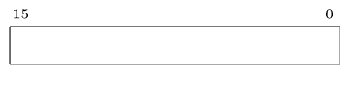
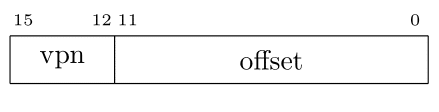
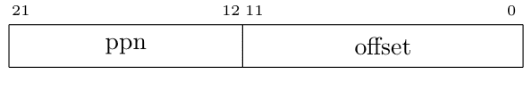
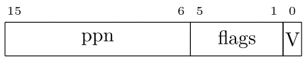
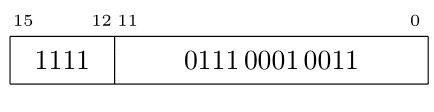
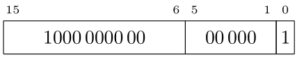
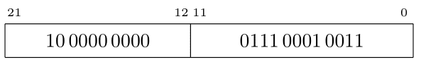

Course (taught and being teached) >>> Current Semester >>> 2022-3B >>> מבוא לארכיטקטורת מחשבים >>> >>> 2022-08-18 >>> 16 ביט כתובת וירטואלית, 22 ביט כתובת פיזית, 4KB גודל דף
כתובת וירטואלית נראית כך:

גודל דף הוא
4KB
ולכן שדה ההיסט ברוחב 12 ביטים
(212= 4096 = 4K).
ולכן יש ארבעה ביטים בשדה מספר דף וירטואלי.

כיון שגודל דף וירטואלי וגודל דף פיזי שווים,
כתובת פיזית נראית כלהלן:

כיון שרוחב ה-vpn הוא 4 ביטים, בטבלת התירגום יש לכל היותר 16 מקומות. מספר זה קטן מספיק כדי שיהיו 16 אוגרים בתוך ה-mmu שיכילו את המידע. שימו לב שהמשמעות של אוגרים ב-mmu היא שבזמן החלפת הקשר על מערכת ההפעלה לדאוג להטעין להם ערכים מתאימים. בדרך כלל לא צריך לשמור את התוכן שלהם כי המידע זמין למערכת ההפעלה ממקורותיה. העובדה שיש צורך להטעין את האוגרים בזמן החלפת הקשר אומרת שאם יש מספר "גדול מדי" של כניסות בטבלת התירגום אזי הטבלה צריכה להיות בזכרון ולא באוגרים בתוך ה-mmu. במקרה כזה ב-mmu יהיה אוגר שמכיל את כתובת תחילת טבלת התרגום. כמובן שבמצב כזה יש גישות עודפות לזכרון ובכך נטפל בהמשך.
בכל כניסה צריך מקום ל-10
ביטים עבור
ppn,
ובנוסף לדגלים.
שני בתים
(16 ביטים)
נשמע סביר למדי עבור גודל כניסה בנסיבות כאלו.
נניח שכניסה בטבלת התרגום נראית כך:

נניח שהערכים בטבלהׂ (בהקסה) הם כלהלן
| F801 |
| F001 |
| E801 |
| E001 |
| D801 |
| D001 |
| C801 |
| C001 |
| B801 |
| B001 |
| A801 |
| A001 |
| 9801 |
| 9001 |
| 8801 |
| 8001 |

השדה
vpn
מכיל 15 (עשרוני).
נפרק את כניסה 15
של הטבלה,
שתוכנה 8001,
לפי השדות:

ה-valid
בכניסה 15 הוא אמת.
לכן לשדה ppn,
שערכו 1000000000,
יש משמעות והוא יחליף את
ה-vpn.

ובהקסה הכתובת הפיזית היא 200713.